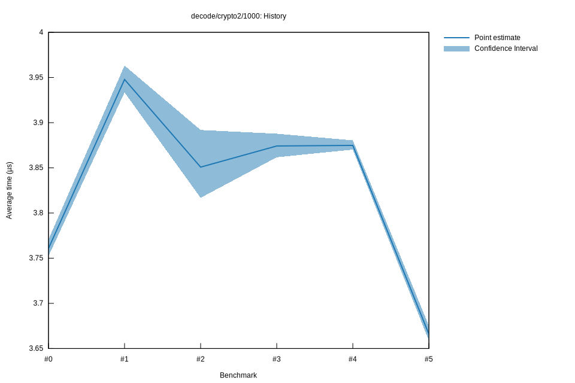

# 52022-10-16T20:22:30+03:00
|
Lower Bound |
Estimate |
Upper Bound |
| Value: |
3.66µs |
3.67µs |
3.68µs |
| Throughput: |
348.23MiB/s |
347.55MiB/s |
346.68MiB/s |
| Change in Value: |
-5.4863% |
-5.3346% |
-5.1657% |
| Change in Throughput: |
+5.8048% |
+5.6352% |
+5.4470% |
No change in performance detected.
# 42022-10-16T17:39:08+03:00
|
Lower Bound |
Estimate |
Upper Bound |
| Value: |
3.87µs |
3.87µs |
3.88µs |
| Throughput: |
329.21MiB/s |
328.82MiB/s |
328.34MiB/s |
| Change in Value: |
-0.2611% |
+0.0024% |
+0.2752% |
| Change in Throughput: |
+0.2618% |
-0.0024% |
-0.2745% |
Change within noise threshold.
# 32022-10-15T17:27:27+03:00
|
Lower Bound |
Estimate |
Upper Bound |
| Value: |
3.86µs |
3.87µs |
3.89µs |
| Throughput: |
329.93MiB/s |
328.87MiB/s |
327.72MiB/s |
| Change in Value: |
-0.2554% |
+0.5676% |
+1.3025% |
| Change in Throughput: |
+0.2560% |
-0.5644% |
-1.2858% |
Change within noise threshold.
# 22022-10-15T17:00:40+03:00
|
Lower Bound |
Estimate |
Upper Bound |
| Value: |
3.82µs |
3.85µs |
3.89µs |
| Throughput: |
333.82MiB/s |
330.87MiB/s |
327.38MiB/s |
| Change in Value: |
-3.7373% |
-2.8905% |
-2.0361% |
| Change in Throughput: |
+3.8824% |
+2.9765% |
+2.0784% |
No change in performance detected.
# 12022-10-08T17:36:07+03:00
|
Lower Bound |
Estimate |
Upper Bound |
| Value: |
3.93µs |
3.95µs |
3.96µs |
| Throughput: |
323.92MiB/s |
322.74MiB/s |
321.49MiB/s |
| Change in Value: |
+4.3869% |
+5.0368% |
+5.7563% |
| Change in Throughput: |
-4.2025% |
-4.7953% |
-5.4430% |
No change in performance detected.
# 02022-10-08T17:16:24+03:00
|
Lower Bound |
Estimate |
Upper Bound |
| Value: |
3.75µs |
3.76µs |
3.77µs |
| Throughput: |
339.55MiB/s |
338.79MiB/s |
337.90MiB/s |